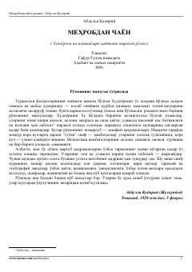

MCXIX asr Qo'qon xonligi hayoti va Anvar bilan Ra'noning fojiali muhabbati haqidagi tarixiy roman.
Ushbu tarixiy roman XIX asr Qo'qon xonligi davridagi ijtimoiy-siyosiy hayotni tasvirlaydi. Asarda adolatsiz hukmdor Xudoyorxon va uning atrofidagi ulamolar hamda oddiy xalq vakillari o'rtasidagi ziddiyatlar, shuningdek, Anvar va Ra'no o'rtasidagi pok muhabbat hikoya qilinadi.